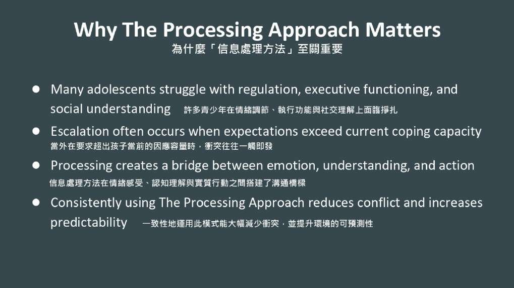
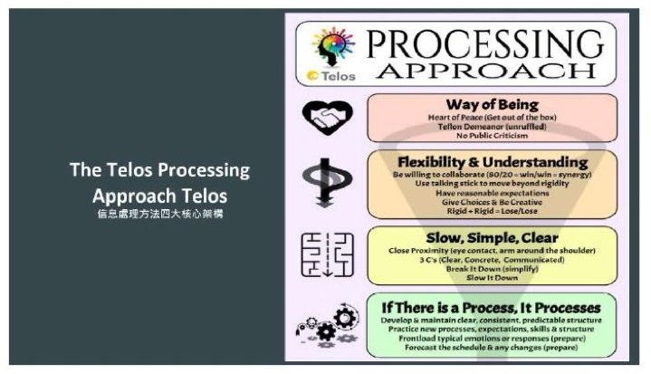
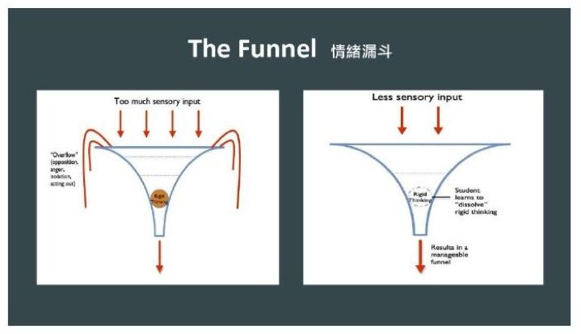
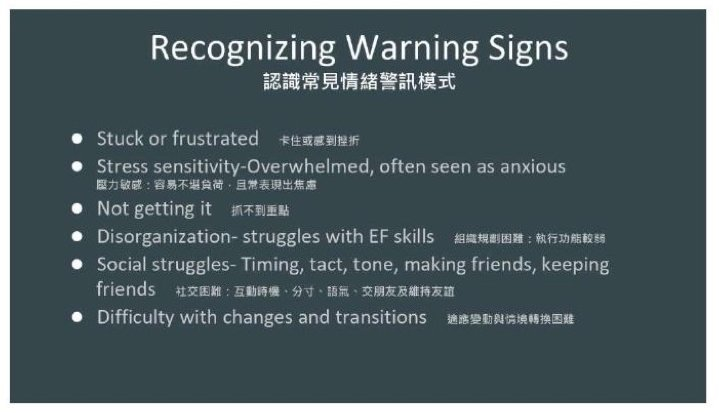
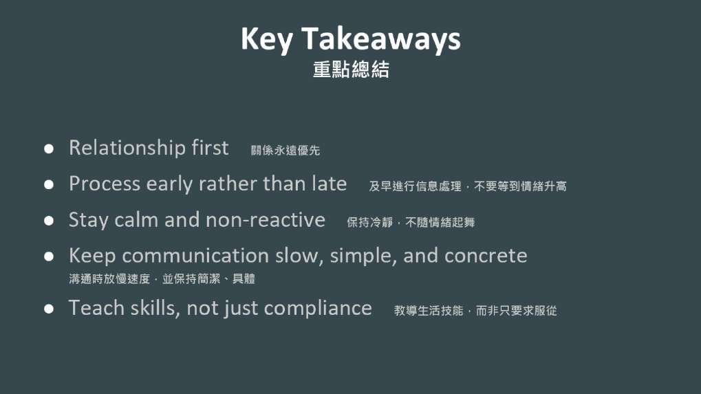

信息處理方法的諮商實務
The Telos Processing Approach
Drew Davis
美國猶他州 Telos 北校區臨床總監
先把情緒降下來再教技能；模式不是標籤，是在告訴你缺哪一項能力。
Drew Davis 上午談怎麼理解青少年，這一場談的是理解之後怎麼辦。他給出四個支柱、一個漏斗比喻，和六種每天都看得到的警訊。每一種警訊，都對應一組可以教的生活技能。
- 本場錄音從講者開口就開始，沒有錄到主持人的介紹。
- 本場沒有錄到聽眾提問，因此沒有問答整理。
重點整理
01問題不在知道，在做不到

- 講者上午談的是怎麼準確理解青少年，這一場要回答的是理解之後該怎麼辦。
- 他以一個轉過多間機構的學生破題：所有人都說他對立、違抗，但他其實很聰明，知道大人要什麼，就是做不到。
- 多數青少年知道的遠多於他們能穩定做到的；問題通常不在知識，而在表現。
- 他要團隊改問一個問題：這個青少年想做成功卻做不到的是什麼、缺了哪些技能——大人的角色因此從糾正者變成老師。
How do we respond in those everyday moments when a young person becomes overwhelmed, rigid, socially disconnected, or simply can't access the skills we know they possess?
本盟譯當一個年輕人不知所措、變得僵化、在社交裡失聯，或就是拿不出我們知道他有的能力，在這些日常時刻，我們該怎麼回應？
02面對青少年的四個支柱

- 第一個支柱是大人自己的狀態：青少年記得我們說了什麼之前，會先記得我們給了什麼感受。
- 第二個支柱是彈性與理解：僵化加僵化永遠不等於彈性；彈性不是降低標準，而是換個方式陪他達到。
- 第三個支柱是放慢、精簡、明確：請青少年把聽到的複述一遍，而不是問他你懂了嗎。
- 第四個支柱是把流程立起來：可預測會降低壓力，要移除的是不必要的不確定，不是每一個挑戰。
I see your struggle, and I am willing to work with you through it.
本盟譯我看見你的掙扎，我願意陪你一起走過去。
03留意漏斗：先調節再教

- 時機很重要：青少年情緒被淹沒的當下，思考、推理與解決問題的能力都受限，這時候教常常沒有用。
- 第一件事是先把情緒強度降下來——減少刺激、把旁觀的人請開、陪他調節，然後才開始教。
- 他把大腦比作漏斗：上面是工作記憶，出口是訊息處理；出口變窄，理解就卡住，孩子就發出警訊。
- 目標不是避開難談的話，而是等大腦準備好學習的時候再談。
04六種警訊，六組技能

- 多年下來他看到六個模式：固執僵化、壓力敏感、抓不到重點、執行功能（計畫與自我控制的能力）困難、社交困難、適應變動困難。
- 這些不是標籤而是指標；看到模式時先放慢、變得好奇，辨認缺了哪一項生活技能，再決定怎麼回應。
- 僵化的孩子常被讀成頑固，更常見的是他當下真的看不到別的選項；先反映他的觀點，再提出另一個。
- 組織規劃困難與社交困難常被誤讀成懶惰或無禮，其實都是可以教、可以練的技能。
Our responsibility is not to repeat the same explanation louder.
本盟譯我們的責任，不是把同一套解釋講得更大聲。
05帶走的是一種眼光

- 變動無可避免，大人的責任不是移除變動，而是教青少年怎麼走過去。
- 他請聽眾不要帶著一份技巧清單離開，而是帶著一種看青少年的不同眼光。
- 看到僵化就想到教彈性，看到困惑就放慢並澄清，看到社交困難就輔導而不是批評。
- 他說很少有青少年早上醒來是希望自己失敗的，多數人是用目前擁有的技能盡力而為。
現場問答
本場沒有錄到聽眾提問，因此沒有問答整理。
帶走的一句
Patterns are invitations to teach, not simply problems to solve.
本盟譯反覆出現的模式是教學的邀請，不只是等著被解決的問題。